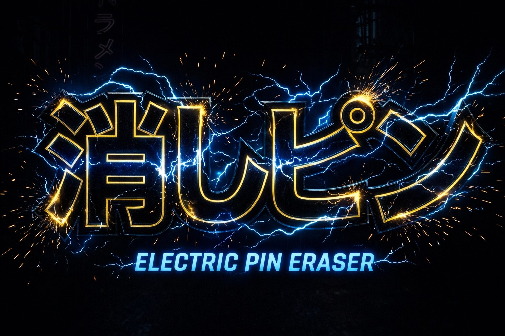

🤖 1人プレイ（CPU対戦）
👥 2人プレイ
👥👤 3人プレイ
👥👥 4人プレイ
── CPU の強さを選ぶ ──
😊 よわい
😐 ふつう
😈 つよい
💀 激つよ
← タイトルに戻る
🎮 消しピン
── ステージを選ぶ ──
⬜ シンプル
🐟 海底
🌌 宇宙
🌈 ステンドグラス
🎲 ランダム
── 能力を3つ選ぶ ──
ゲームスタート ▶
消しピン
🔊
🎵BGM
35%
🔔効果音
100%
P1のターン — 消しゴムをクリックしてエイム
P2
P1
次のラウンド
🔄 やり直し
キャンセル
消しゴムをクリック → ドラッグで方向と強さを決める → 離して発射
先に相手の消しゴムを落としたほうの勝ち（3本先取）